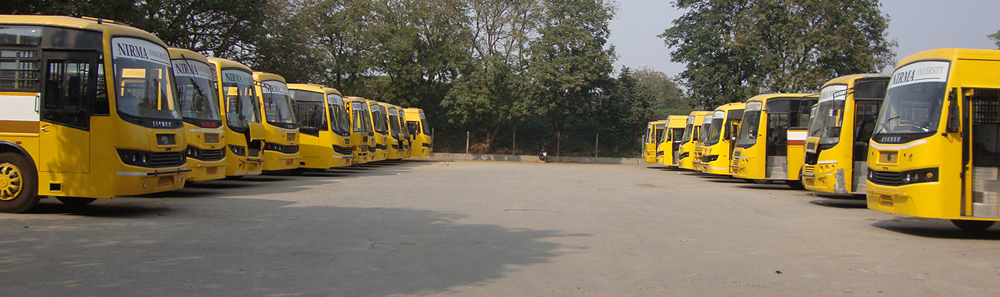

(1)Location:
Where: The main bus parking area is located behind the Cricket Ground, near the Pharmacy Block and the Student Activity Center (SAC)
(2)Landmark:
If you are standing at the main entrance of the university, you have to go past the A/B/C blocks and the cricket ground. The buses usually line up in the large open grounds towards the rear/side of the campus near the sports facilities.
(3)Usage for Students:
--Morning Arrival: Buses usually drop students off at a central point near the Institute of Technology (A/B Blockarea) or the main internal road so you don't have to walk from the parking lot.
--Evening Departure: For the return journey (usually around 3:15 PM or 4:15 PM), the buses are parked in the
designated area. You have to walk to the parking ground, find your route number (written on the bus windshield),
and board there.
(4)Facilities:
Two-Wheelers: Large open parking lots are available near the Canteen and behind the N Block.
Four-Wheelers: There is limited parking for students near the canteen area and specific zones near the entrance.
Nirma University offers parking for both two-wheelers and four-wheelers, with dedicated lots near institutes and a modern two-layer basement parking in the new building, all monitored by CCTV, ensuring convenient and secure vehicle accommodation for students, faculty, and staff on campus.